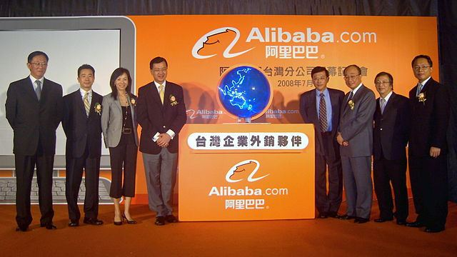
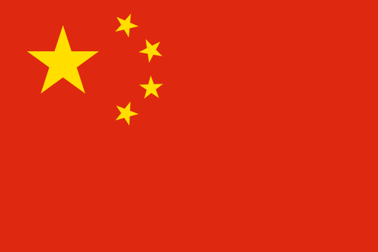

China goes tech-saavy.
In the 1970s, and especially during the 1990s, foreign direct investments have improved the quality of the Chinese high technology industry. In 2001, China's 145 million mobile phone users were the largest in the world. After surpassing Japan in 2002, China is expected to overtake the United States as the world's largest PC market.
In the past thirty or so years, "Made in China" products have moved past toys, clothing, and shows, and now include consumer electronic and high-tech products. In 2003, Chinese high-tech exports valued at 113 billion US dollars.
In 2001, China became a member of the World Trade Organization. The country became more integrated into the world economy, yet it would face a much fiercer international competition. However, can the Chinese economy and its high-tech industry sustain such high-speed growth? In the 21st century, how is China developing its indigenous technological industry to support its competitiveness in world markets? Let us examine the country's smartphone, social media, and e-commerce markets to address these two questions.
In China, there are smartphones everywhere. Literally everywhere.
Umeng, a Chinese analytics firm, confirmed that, by the end of 2013, the number of active smartphones in China exceeded 700 million. Because China has the world's largest number of active smartphone users, many domestic and international companies want to grab a slice of this lucrative market.
As the price of smartphones drastically decreases, more first-time users are buying their first smartphones. A majority, close to 57% of Android devices sold in China last year were lower than $350. High-end smartphones were priced at $500, accounting for 27% of smartphones sold last year; of that amount, 80% were Apple iPhones. In the Android marketplace, Korean-based Samsung and Chinese-based Xiaomi dominated.
Xiaomi's smartphones are currently sold in China, Hong Kong, and Taiwan. However, its hiring of a new Vice President of Xiaomi Global shows that the three-year old company plans to strengthen its competitiveness in international markets. Xiaomi's track record of rapid growth and saavy marketing indicates that this Chinese-based company will quickly become a mighty competitor in the US smartphone market.
The dream of Xiaomi's CEO, Lei Jun is to build a smartphone company that can compete with Apple. Despite China's reputation for manufacturing low-cost, low-quality goods, Lei Jun wants to push the idea that China has the ability to manufacture high-end hardware.
Xiaomi challenges Samsung in the Chinese smartphone marketplace. In the later half of 2013, Xiaomi's Mi 2S was the most popular smartphone in the Chinese market, followed by Samsung's Galaxy S4.
Xiaomi's successful sales can be contributed to the company's willingness to try alternative marketing strategies. By utilizing social media to gather user feedback, Xiaomi has also gained a loyal fanbase. Yet, Xiaomi still needs to prove the competitive advantage of its smartphones on the international market.

The Chinese love online shopping.
According to McKinsey, China has the world's second largest e-commerce market, with estimates as high as $210 billion for revenues in 2012 and a compound annual growth rate of 120% since 2003. Almost 90% of Chinese electronic retailing occurs on virtual marketplaces. These sprawling e-commerce platforms offer products and services to consumers.
Alibaba is China's leading e-commerce company, operating the world's largest marketplace for both international and domestic Chinese trade. This company is focused on fostering an open, collaborative, and prosperous e-commerce system that benefits consumers, merchants, and the economy.
Alibaba wants to become a more global company. It has already changed the way China shops，and also wants to transform the country's service industry, adding even more users to the company's group of 300 million customers. Alibaba has its sights set firmly on the US market, establishing an investment organization to expand the company's overseas influence and competitiveness. This year, the company has begun the process of an initial public offering in the United States, with economists valuing the company at $110 billion.
If Alibaba has seemed unstoppable in its 15-year rise, an IPO will could make one of the world's most important high-tech companies face its most serious challenges so far. Alibaba's strategy of building its own global e-commerce empire, with its own financial services, has attracted close scrutiny from China's regulators and resistance from the country's banks. Alibaba's executive vice chairman says that the company's strategy has a single focus: to boost Alibaba's core e-commerce platform, especially as consumers shop more on smartphones.
China is king of social media. How ironic.
China does not have Facebook, Twitter, or Youtube. Yet, China has the world's largest active environment for social media. More than 300 million people use social medial including blogs, social networks, microblogs, online communities, etc. China's Internet users spend more than 40% of their time online for social media, a number that continues to rise rapidly.
Social media began in China around 1994 with online communities and forums, and in 1994, shifted towards instant messaging. Blogging began in 2004, and a year later, social networks with chatting capabilities, such as Ren Ren, were established. In 2009, Sina Weibo launched microblogging with multimedia service.
This explosive growth shows few signs of abating. It is harder for the Chinese government to censor social media than other information channels. Because many Chinese citizens are somewhat skeptical of the authority of governments and formal institutions, users disproportionately direct more respect towards opinion leaders on social media.
Sina Weibo is among China's fastest growing and most talked about social media, often referred to as China's Twitter and Facebook. In just four short years, Weibo has attracted over 500 million users, including ordinary people, celebrities, and other public figures, as well as organizations, such as media, businesses, governments, and charities.
However, Weibo confines itself in China, having amassed a huge user base in China and Chinese communities abroad. Besides Sina introducing an English-version of Weibo and allowing users to login through Facebook, Weibo has made no effort in expanding to foreign markets, rather focusing on recruiting users within China. New research suggests that Sina may need to re-consider its strategy: Weibo seems to have peaked in popularity. Weibo's domestic competitor, Tencent's WeChat, poses a threat to Weibo's competitiveness in the social media market.
Tencent's Wechat was first launched in late 2011. During its first two years, WeChat already accumulated over 300 million years. It approaches a completely different strategy than Weibo: going directly to the international market to sell its product. However, Weibo is very massive and popular in China, and also serves as the most active and powerful Chinese platform for public expression.
This year, Sina Weibo fundraised $500 million in preparation for its IPO. Weibo also has the support of Alibaba in the social media market. Alibaba holds an 18% stake in Weibo, having stopped the use of WeChat seller-side services, and allowing Weibo users to directly buy products from Taobao. In addition, from an international perspective, China's Weibo has a greater influence than United-States based Twitter. In fact, Twitter worries that its Chinese counterpart might actually impede its international growth.

"Made in China" looks like a tech winner.
From the Chinese market perspective of smartphones, e-commerce, and social media, the growth of China's tech industry has been quick and mighty. Web-based products have also been well received by Chinese citizens, enabling domestic businesses to hold a significant market share. Indigenous products are fierce competitors with their foreign counterparts, and Chinese companies, such as Alibaba, have invested heavily in indigenous products to expand their overseas influence and competitiveness.
In terms of the smartphone, e-commerce and social media markets, the Chinese economy and its high-tech sector have not only maintained their rapid growth, but through their clever marketing, design, and business strategies, have also captured international acclaim. However, on the increasingly competitive international market, Chinese companies must devote more sources to research and development to keep up and surpass their foreign rivals.
Chinese tech companies need to realize that their local knowledge is a source of competitive advantage, and that they must take advantage of this expertise. Companies with global aspirations need to develop an international brand to promote high-quality and reliable products.
At the end of 2013, China's Internet population reached 618 million, with 81% through mobile. An increasingly connected country provides more opportunities for tech innovation in the likes of Alibaba, Xiaomi and Sina Weibo.
So, what's going to be the next "Made in China" high-tech gadget?